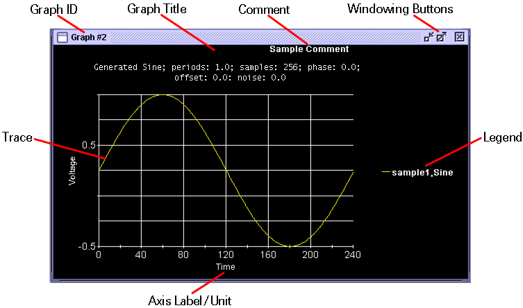

Data Display Panel
The Data Display Panel provides a customizable display area to plot arbitrary data. The following shows a basic Data Display Panel without cursors or markers displayed in the Waveform Graphs Tool (WGT).

Graph #(graph ID) - When the Data Display Panel is open and visible, this label represents a graph ID -an identifier of each Data Display Panel- in the Selected Graph Table of the Waveform Navigator Tool (WNT). The users can control the multiple Data Display Panels by using this identifier. When the Data Display Panel is minimized, this label shows the waveform information.
Comment - Input a user comment into the selected Data Display Panel in this text area.
Windowing Buttons - These buttons allow the users to minimize, maximize, or delete the Data Display Panel.
Graph Title - Display the information of the waveform in the selected Data Display Panel in this text area. You can modify it manually by double-clicking the Data Display Panel and then changing the title in the pop-up Format window.
Trace - Specified trace.
Axis Label - Specify a label for the axis in this text area.
Axis Unit - Specify a unit for the axis in this text area (graph will be changed based on this unit).
Legend - The name appearing in the Pin Name and Label columns of the Selected Graph table become the Legend.
The context information such as graph title, axis label, axis unit, and user comment can be specified in the WGT as well as the Data Display API. In the WGT, you can specify the context information in the Format Dialog Box.
If cursors or markers are defined, their positions are displayed at the bottom of the Data Display Panel:
Cursors

Marker Functions

Slope Marker Functions

Functional changes
- Introduced before SmarTest 6.3.2
- SmarTest 6.5.0: Graph ID shows the information of the waveform when the Data Display Panel is iconified.
- SmarTest 6.5.0: Graph title displays the information of the first waveform added in the selected Data Display Panel.